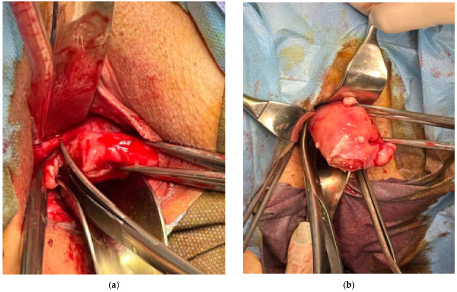

Página 4 · Prolapsos / distopia genital
Prolapso uterino: as três cirurgias e quem fica com o útero
Diagnosticou o prolapso uterino — trata. Mas tira o útero ou salva o útero? A resposta depende do tamanho e do desejo dela.
A distopia é objetiva: diagnosticou, trata
Antes das técnicas, o tom: a distopia é direta. Diagnosticou o prolapso, trata para resolver — não há mistério na conduta. O difícil desta discussão não é decidir o tratamento (que sai quase por compartimento), é quantificar o prolapso com precisão. Com isso em mente, o prolapso uterino tem três saídas cirúrgicas, e a escolha entre elas é limpa.
Histerectomia vaginal: o prolapso grande + refazer o assoalho + fixar a cúpula
Para o prolapso uterino grande, com o útero todo para fora, a saída é a histerectomia vaginal: retira-se o útero e refaz-se todo o assoalho pélvico. Junto vem a reconstrução sítio-específica — corrigem-se os pontos onde a parede vaginal falhou, tanto anterior quanto posterior, porque num prolapso grande a bexiga e o reto também desceram. E há um passo que a banca cobra e que não pode ser esquecido: depois de tirar o útero, é preciso fixar a cúpula vaginal lá em cima, nos ligamentos — porque, sem essa fixação, a cúpula desce depois e vira um prolapso de cúpula. Retirar o útero sem ancorar a cúpula é trocar um prolapso por outro.
Histeropexia: suspender e prender o útero — sem retirar
Nem toda paciente quer (ou precisa) perder o útero. A histeropexia — o sufixo pexia significa sutura/suspensão — suspende e prende o útero de novo lá em cima, nos ligamentos cardinais e útero-sacros. Não se retira o útero: é a opção de quem quer preservá-lo. É uma técnica menos falada, mas cai em prova justamente porque o aluno esquece que dá para tratar o prolapso mantendo o útero.
Manchester: a amputação parcial do colo (pra quem quer manter o útero)
A terceira saída é a cirurgia de Manchester = amputação parcial do colo. Ela é indicada no prolapso pequeno ou no alongamento hipertrófico — é, aliás, a mesma cirurgia que se faria só por um colo longo (o elo direto com o diferencial anterior). O mnemônico prende: “Manchester pra quem quer manter o útero” — a aliteração Manchester/manter marca que é uma técnica conservadora do útero.
A escada: gravidade e desejo escolhem o degrau
As três se organizam numa escada por gravidade e desejo de preservar. Prolapso uterino grande → histerectomia vaginal (radical, refaz o assoalho, fixa a cúpula). Prolapso pequeno ou vontade de manter o útero → histeropexia (suspende) ou Manchester (amputa parcial o colo). Sobe-se para o degrau radical só quando o tamanho manda; havendo prolapso pequeno ou desejo de preservar, fica-se nos degraus conservadores.
| Técnica | Indicação | Retira o útero? | Detalhe-chave |
|---|---|---|---|
| Histerectomia vaginal | prolapso uterino grande | SIM | + reconstrução sítio-específica + fixar a cúpula (senão desce) |
| Histeropexia | preservar útero / prolapso menor | NÃO | suspende e fixa nos ligamentos cardinais / útero-sacros |
| Manchester | prolapso pequeno ou alongamento | NÃO | amputação parcial do colo — “pra quem quer manter o útero” |

Tempo cirúrgico do apical — o útero (massa globular) sendo extraído pela via vaginal, seguro por pinças. É a saída radical do prolapso uterino grande, quando se refaz o assoalho e se fixa a cúpula.
Nicodin M et al. “Perioperative Outcomes of Total Vaginal Hysterectomy…” Medicina (Kaunas). 2026;62(2):321 (Fig. 2), via PubMed Central. Licenciado sob CC BY 4.0. Fonte: PMC.
real de procedimento — histerectomia vaginalMapa do assoalhoO “fixar a cúpula nos ligamentos” ancora na coluna apical do mapa — e abre a seta: se a cúpula ceder depois, vira prolapso de cúpula.
Quiz — fixação
Paciente de 45 anos com prolapso uterino de pequeno grau deseja preservar o útero e a fertilidade. Entre as opções, a que NÃO serve ao objetivo dela é:
- D — a que NÃO serve. A histerectomia retira o útero — incompatível com preservar.
- A. histeropexia suspende e prende o útero, preservando-o — serve.
- B. Manchester amputa parcial só o colo, mantém o útero (“manter o útero”) — serve.
- C. prolapso pequeno pode nem exigir cirurgia; expectante é degrau legítimo.
- Por que cair. o aluno lê “prolapso uterino” e dispara “histerectomia” no automático, esquecendo que o degrau radical é para o prolapso grande, não para quem quer preservar.
Após uma histerectomia vaginal por prolapso uterino, qual passo, se omitido, tende a gerar um novo prolapso (de cúpula)?
- B — a virada. Retirado o útero, a cúpula perde a ancoragem; fixá-la nos ligamentos é o que a impede de descer depois.
- A. a reconstrução anterior corrige a bexiga, mas não ancora a cúpula.
- C. Manchester é para quem mantém o útero — não faz sentido após histerectomia.
- D. a tela transvaginal não é rotina (reservada à recidiva; banida em vários contextos) — colocá-la de rotina é erro.
- Por que cair. parece que “refazer as paredes” resolve tudo, mas o ápice tem sua própria ancoragem, que é o passo esquecido.
Nem toda paciente pode ir ao centro cirúrgico: quando o risco é proibitivo, a escada muda de natureza — e é aí que entram o pessário e a colpocleise, com uma pegadinha que derruba muita gente.